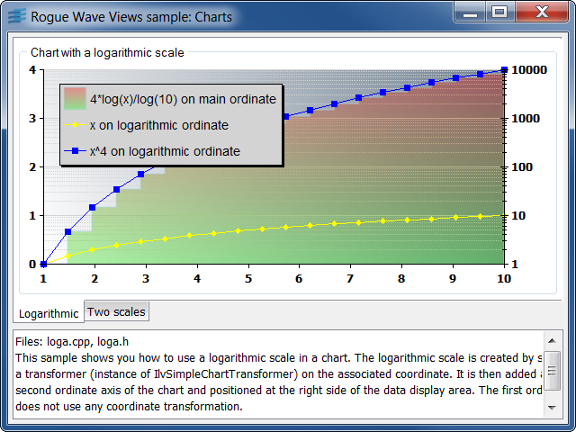
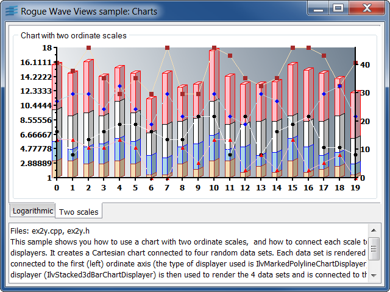

logaCreation of a chart using a logarithmic scale.
This sample shows you how to use a logarithmic scale in a chart.
The logarithmic scale is created by setting a transformer (instance of
IlvSimpleChartTransformer) on the associated coordinate. It is then added as the
second ordinate axis of the chart and positioned at the right side of the data
display area. The first ordinate does not use any coordinate transformation.
Three callback functions are used as input data and are rendered with three displayers:
y = x^4.y = 4*log(x)/log(10).y = x.IlvCartesianChartIlvCallbackChartFunctionIlvChartCoordinateInfoIlvSimpleChartTransformerIlvRectangularScaleDisplayerIlvRectangularGridDisplayerIlvMarkedPolylineChartDisplayerIlvStairChartDisplayerIlvChartLegendex2yCreation of a chart with two ordinate scales.
This sample shows you how to use a chart with two ordinate scales, and how to connect each scale to one or several displayers.
It creates a Cartesian chart connected to four random data sets. Each data set is
rendered by a displayer connected to the first (left) ordinate axis (the type of
displayer used is IlvMarkedPolylineChartDisplayer). A stacked displayer
(IlvStacked3dBarChartDisplayer) is then used to render the 4 data sets and is
connected to the second (right) ordinate axis.
IlvCartesianChartIlvChartCoordinateInfoIlvRectangularScaleDisplayerIlvMarkedPolylineChartDisplayerIlvStacked3dBarChartDisplayer